{kind=link}
{kind=link}
{kind=link}
{kind=link}
{kind=link}
{kind=link}
{kind=link}
{kind=link}
{kind=link}
{kind=link}
{kind=link}
{kind=link}
{kind=link}
{kind=link}
{kind=link}
{kind=link}
{kind=link}


Eduard 1/48 Pfalz D.III Double kit
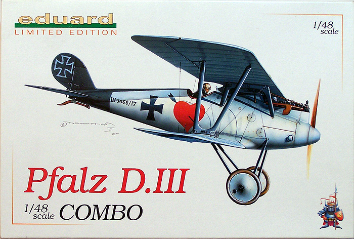
Kit #1114
MSRP $49.95
Images and text Copyright © 2007 by Matt Swan
Developmental Background
Pfalz Flugzeugwerke was started by the three Everbusch brothers and was licensed to build Morane-Saulnier monoplanes for the Idflieg – the bureau of the German War Office that oversaw military aviation during the First World War. In 1916 they began to produce Roland D.I and D.II fighters and also hired Rudolph Gehringer as their new chief engineer. Gahringer immediately began work on a new, all original fighter design which utilized molded plywood fuselage shell and a conventional wing design. The resulting aircraft was light and strong with good diving characteristics. This aircraft was designated Pfalz D.III and went into production almost immediately.
The D.III was a fair airplane with a few faults. It used an inverted airfoil on the elevator which enhanced its ability to recover from a dive, a twin spar lower wing design was used which overcame the issues pilots were experiencing with the Albatross with its single spar design which tended to fail during a high speed dive. This feature enabled the D.III to be very effective in combating observation balloons which were commonly protected with concentrations of anti-aircraft batteries. On the down side the D.III borrowed gun emplacement from the Roland where the machine guns were buried in the fuselage which prevented the pilot from clearing gun jams during flight. Later models moved the guns onto a platform in front of the pilot and also replaced the Mercedes 180 hp engine (D.IIIa). The formed fuselage was prone to warpage as the airframe aged due to poor glue or possibly moisture absorption. Other issues the type experienced were low power and climb performance. The type had a nasty tendency to slip in turns which led to many accidents. The controls were heavy and the type was prone to spins which were difficult to recover from however, even with these shortfalls the type stayed in service through the end of the war with about 260 D.IIIs being manufactured and about 750 D.IIIas going into service. Today no examples of this type survive.
The Kit
Eduard has recently been making some serious waves with high end 1/48 scale kits and innovative boxing formats. Here we have two examples of their D.III packaged together with decals for several very colorful aircraft and photo etched material to super detail one kit. Basically I think what we have here would be considered one Profit Pack kit and one Weekend kit in the same box. The box itself is not any larger than what you would expect with a single plane kit but that’s not surprising as this is a pretty small aircraft even in 1/48 scale. Inside we have two poly bags each containing a complete set of plastic for one model airplane. We also have a large decal sheet, two small frets of photo etch and lots of instruction material.
The plastic is all very clean with good surface texture, no visible flash, sink marks or injector pin markings. The wings are all cast as heavy single pieces but the tan plastic does not seem to have suffered from any shrinkage during cooling as is often seen in earlier kits from other manufactures using this approach. The wing rib detail does seem to be just a little overdone - too pronounced for my taste. The kit includes a full in-line engine with good detail, a well outfitted cockpit and would build up nicely in just plastic. The inclusion of the photo etch set really adds to the front office and includes a variety of service access ports for the exterior. One fret is your standard etched steel and the smaller fret is of Eduard’s trademark colored material. Overall each plastic kit contains seventy nine plastic parts and the modeler gets two frets of photo etched material for use on one kit.
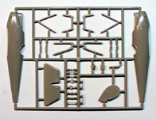
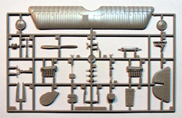
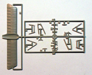
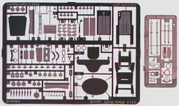
You may click on the small images above to view larger pictures
Decals and Instructions
The kit instructions consist of a small ten page pamphlet that opens with a profile of the D.III and basic modeling cautions in four languages. There is a complete parts map and paint chart including color codes for six common manufactures of modeling paint. Following this are approximately fifteen assembly steps all with nice exploded views and color call-outs. 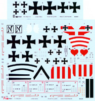 The last page of this pamphlet includes a rigging diagram and control line layout plan. There is a separate, full color fold-out for decal placement that shows six aircraft with brief histories, excellent color representation and marking placement.
The kit includes a single large sheet of decals and a small supplement sheet of wing and fuselage markings, this is to allow for two full builds to be decorated from these sheets. The decals are simply beautiful, there is no other way to describe them. The colors are sharp and vibrant, the print registry is dead on the mark and color density is solid. The decals lift off the backing paper quickly when wet, slide well and react to setting solutions well. They are not thick and snuggle down very nicely.
Conclusions
This is a great kit, the parts are all well made, fit together very nicely and have no visible defects. The instructions are well done and easy to follow. The photo etched details really add to the kit and once you’ve built one with the PE parts you pretty much have to go out and buy another PE set for the second one. There is no need for any aftermarket items for this kit as it is all there right from the beginning. The only issues I have with this kit are that there are only enough PE parts for one build and the decals offered are so cool that you really want to build all six aircraft. While this is good for Eduard it is bad for my wallet. There is one thing lacking that I as a suffer of AMS would have liked to see and that is the inclusion of photo etched turnbuckles for the rigging, for the average to advanced modeler this is no problem.
I give this kit a very good recommendation. It may not have been a great performer in reality but on the modeling table she is hard to beat for a fun build and a good looking model.
11/1/07 Construction begins
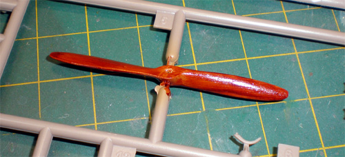
I have only built one other bi-plane before so do not have a lot of ingrained building habits in this field. This is going to be something a little new for me so I’ll try not to make a mess stumbling around in the dark. As with most of my WW2 aircraft builds I started with the interior. The photo etched replacements for the base plastic pieces add greatly to the interior detail. I wanted to replicate the wood grain finish of the interior but have never done this before so here is a new trick. I started by airbrushing the interior with German Sand, something that would give me a light tan base color. Once this was dry I mixed a small amount of Winsor Newton Burnt Umber oil paint 50/50 with a medium drying agent – you can buy both of these at any art supply store. Using a wide, somewhat stiff brush I then brushed it on leaving lots of streaks through the paint. I alternated direction from left to right and up to down for different panels to provide for some variance in the wood structure. I also treated the propeller like this. The oil paint needed about a week to dry then was sealed with a coat of Tamiya clear yellow.
It took a bit of fiddling to get the fuselage halves together with all that PE stuff in there but eventually things mated up. I glued the fuselage together with Tenax 7r then filled the seams with Mr. Surfacer 500 followed by some wet sanding. The lower wing was attached and the tail surfaces were placed. The kit provides several photo etched exterior plates and I did not use all of them. I did replace the plates on the elevators and added the control cable guide ports to the fuselage. The mounting plates for the landing gear were replaced with the PE parts and the gear struts were glued in place. From here I had to break with my traditional approach to building which is to put everything together then paint.
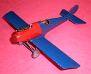
With the upper wing and struts separate from the rest of the model I began to paint. The lower surfaces were done first with Alclad white aluminum then masked off. The nose was done with Testors flat red and masked off. The rest of the aircraft was done with Gunze Phthalo Cyamine Blue. Once everything was dry the masks were removed and the upper wing was attached. Again, more fiddling around with getting the struts aligned and the upper wing centered then a short period of time holding everything in place while the glue set up. If I’m going to be building more of these bi-plane thingies I need to get a jig to hold all the parts for me. Finally everything was together and I could begin the rigging. This is the one part that has always held me back from building WW1 subjects – all those bloody strings.
It seems there is more than one approach to rigging one of these beasties, some folk use stretched sprue, others use strands of copper wire or steel wire while others use thread. I elected to use invisible thread because if it was not put in snug I could tighten it up later. 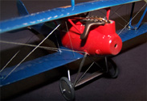
I attached one end of each thread to the plane then held it gently in some tweezers to measure the proper length and cut it off. The free end was super glued down with a very fine spot of medium glue and some accelerator. Not every line went in snug which was no problem as I was able to light a toothpick then blow it out and hold the glowing ember near the slack thread. Zip, thread tightened right up! Once all the rigging was in place I painted it with Model Master Steel. Really the rigging turned out to be not that bad. I did melt off two pieces with the glowing ember thing and had to replace them but by time I was done I was getting pretty handy with the rigging.
Since my paints went on pretty glossy I skipped the preliminary coat of Future and went straight to decals. Decals went on just fine and were sealed with Future after they dried. Some Paynes Gray wash wash put into the control surface engraved lines and wiped down then the model was coated with some thinned Polly Scale clear flat. I spent about 40 hours over seven weeks building this kit and it turned out to not be nearly as bad as I had thought it would. I will most definitely be building more WW1 subjects in the future.
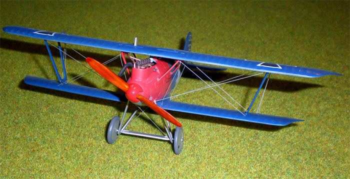
You may click on the small images below to view larger pictures
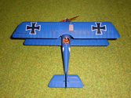
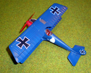
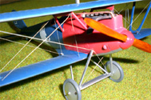
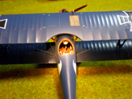
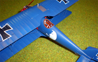